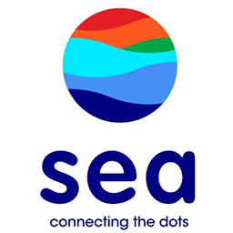
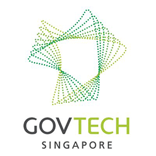
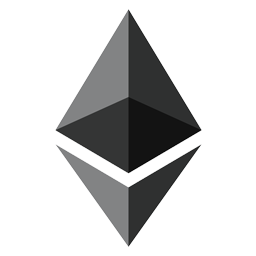

Hi!
I'm a sophomore at theNational University of Singapore, readingComputer Science. I'll be graduating in May 2020 with specializations inProgramming LanguagesandArtificial Intelligence.
My experience is primarily infront-endandback-end web development, but I'm open to any software engineering or data science position.
Let me know if you want to have a chat!
Education
Here's a peek into my formal education so far:
National University of SingaporeAug 2016 – Present - Bachelor of Computing in Computer Science. GPA: 4.70/5.00 (First Class Honours)
- Tutor for CS2103 Software Engineering (Spring 2018)
- Advisor for NUS Orbital 2018
- Notable modules:
- CS3216 Software Product Engineering for Digital Markets
- CS3230 Design and Analysis of Algorithms
- CS3243 Introduction to Artificial Intelligence
- CS3244 Machine Learning
- CS3234 Logic and Formal Systems
Singapore PolytechnicApr 2011 – Apr 2014 - Diploma in Chemical Engineering. GPA: 3.67/4.00
- Diploma-Plus Certificate in Engineering Mathematics and Science
Professional Experience
I've been programming professionally for a bit:
- 
Sea GroupIncoming Software Engineer InternStarting May 2018 - 
Government Technology Agency of Singapore (GovTech)Data Engineer InternDec 2017 – Jan 2018 - Implemented and released public APIs for Data.gov.sg portal using Node.js with AWS Lambda and DynamoDB.
- Designed a unifying schema of several different formats for archival using DynamoDB.
- Wrote serverless Node.js functions to scrape and verify JSON, then uploading to DynamoDB.
- Minimized AWS Lambda costs by benchmarking, profiling and optimizing slow-running Node.js scripts.
- Developed and deployed SMS-based medicine reminder solution targeted at middle-aged users.
Takeaways:While building the public API, I learnt the importance of API response latencies and how we can cache some responses to reduce the latencies and cost of running the functions. This was also my first time using serverless functions, which taught me how stateless functions can reduce the complexity of our applications.
Benchmarking and profiling the Node.js scripts taught me how the V8 JavaScript engine works in detail, such as how it manages memory and its garbage collection strategies.
- 
Ethereum TechFreelance Web DeveloperOct 2017 – Dec 2017 - Created the front-end of a cryptocurrency mining analytics dashboard with Vue.js.
- Helped client visualize health of their miners and troubleshoot malfunctioning machines.
- Suggested and implemented improvements to user experience from client's original design.
Takeaways:This was my first commissioned project where we had to start from scratch and produce a high-quality maintainable code base. As the customer was not very sure what he wanted, we had to interpret his needs and suggest possible improvements. The constant feedback process helped us better understand the clients needs and resulted in a product with good user experience.
Ministry of Defence (Singapore)Personnel Systems AnalystDec 2014 – Aug 2016 - Simulated and analysed personnel movement using complex system dynamics simulations.
- Wrote VBA macros and SQL queries for Microsoft Access, Excel and Word.
Takeaways:As we worked with a lot of badly formatted historical data, I learnt how to process data into readable forms. It was my first data analysis job, and I learnt a lot of simulation techniques as well as methods to verify our models. I also learnt how to properly present data for visualization, as I needed to explain what the model was doing and what we could learn from it.
Alpha Consulting Engineers Private LimitedSystem AdministratorMar 2014 – Jul 2014 - Administered Windows servers and clients using IIS and Active Directory.
- Redesigned homepage using HTML5, CSS and JavaScript.
- Implemented features in the intranet page using jQuery, PHP and MariaDB/MySQL.
- Decompiled and modified legacy JavaServer Pages application.
Takeaways:This was my first programming related job. I learnt how to work with servers through SSH and RDP. While there, I also did some web development for the intranet and public websites of the company.
I also worked with legacy code where the source files were lost. Since it was a JavaServer Pages application, I managed to decompile the class files to understand what was happening and used a hex editor to change some values.
Projects
Here are some interesting projects I've worked on in the past:
PearOct 2017 – Nov 2017 - Progressive Web App (PWA), iOS and Android app where users matchmake their friends.
- Pear won 2nd prize in NUS's 11th School of Computing Term Project Showcase (STePS).
- Led front-end development using Vue.js and Cordova.
- Released app to iOS App Store and Google Play Store, hit 300 users within 24 hours.
- Source:github.com/Pear-App/pear-client, Description:11th STePS submission
- Video:youtu.be/Tv90y_wW7hw
collaborate!Jun 2017 – Aug 2017 - Real-time collaborative webapp that simulates a table top discussion.
- collaborate! won honorable mention in the advanced category of NUS School of Computing's Orbital 2017.
- Led front-end development using React + Redux and Socket.io.
- Wrote and deployed back-end using Node.js and Koa.
- Source:github.com/goweiwen/collaborate, Demo:collaborate-app.herokuapp.com
- Video:youtu.be/7TeuZ-MRs1k
vue-swingOct 2017 Present - Vue.js component for swiping cards left and right, as seen in apps like Jelly and Tinder.
- Published on NPM and actively maintained.
- Source:github.com/goweiwen/vue-swing
PixelectAug 2017 - Sep 2017 - Group photo sharing webapp for users to quickly share and vote on photos taken in a group outing with friends.
- Designed and wrote front-end using Vue.js.
- Source:github.com/anaprimawaty/pixelect
ivle-syncAug 2016 – Present - Automatically downloads files, announcements and webcasts from NUS's IVLE portal.
- Created and maintained application built in Python 3.
- Source:github.com/goweiwen/ivle-sync
A more comprehensive list can be foundhere.
Awards and Achievements
I have some awards to my name, too:
Yale-NUS Data 2.0 DatathonFirst PlaceMar 2018 - Studied viability of ride sharing in Singapore compared to public transport regarding carbon emissions using R.
NUS 11th School of Computing Term Project Showcase (11th STePS)Second PlaceNov 2017 - Pear won 2nd prize in NUS's 11th STePS for CS3216 Software Product Engineering for Digital Markets.
NUS Orbital Programme 2017 (Apollo 11)Honorable MentionSep 2017 - collaborate! won an honorable mention in the advanced category of NUS School of Computing's Orbital 2017.
FOSSASIA 2017 Microsoft Mission Mars ChallengeSecond PrizeMar 2017 DMG Excellence Award (Individual)Mar 2016 - Awarded by the Defence Management Group to individuals who have displayed exemplary attitude towards work.
Preferred Technologies
Here are some languages I'm confident in working professionally with:
- Languages:Python, JavaScript, HTML/CSS, Haskell, Golang, Kotlin, Scala, Java, PHP, SQL
- Technologies:Vue.js, React.js, Angular, jQuery, Elm, Node.js, Django, Laravel, Keras, TensorFlow
I'm a huge fan of trying out new technologies, so even if it isn't listed here, I might have used it for a pet project before.
Get in Touch!
Feel free to give me a call or drop me an email if you want to have a chat!